Faster R-CNN: Towards Real-Time Object Detection with Region Proposal Networks
Authors: Shaoqing Ren, Kaiming He, Ross Girshick, Jian Sun
Presentation by: Bassel Succar
Time of Presentation: 30th of January 2025
Blog post by: Aleksandar Avdalovic
Link to Paper:
https://arxiv.org/abs/1506.01497
Summary of the Paper
The paper introduces Faster R-CNN, a deep learning-based object detection framework that improves upon previous region-based detection models by integrating a Region Proposal Network (RPN). Unlike earlier methods that relied on computationally expensive region proposal algorithms, Faster R-CNN shares convolutional features between region proposal and object detection networks, making the process nearly cost-free.
The RPN generates region proposals efficiently, which are then refined by the Fast R-CNN detector. The experimental results demonstrate that Faster R-CNN significantly improves detection accuracy while achieving real-time processing speeds, making it a powerful tool for object detection tasks.
Slide 3: Problem

State-of-the-art object detection networks at the time depended on region proposal algorithms to hypothesize object locations before classification. These region proposal algorithms, however, were computationally expensive, creating a significant bottleneck.
Selective Search, for instance, could take up to 2 seconds per image on a CPU, making it significantly slower than detection networks. Even more optimized methods like EdgeBoxes still consumed substantial runtime, limiting efficiency.
As a result, the region proposal stage became the primary computational bottleneck during test-time execution for state-of-the-art object detection systems.
Slide 4: Solution
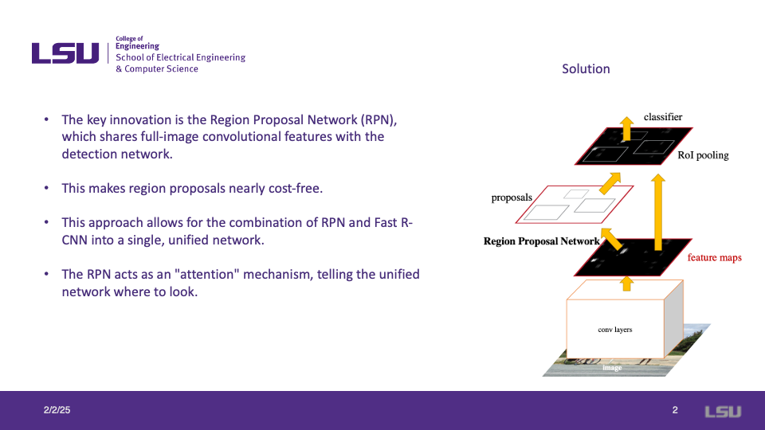
The key innovation in Faster R-CNN is the introduction of the Region Proposal Network (RPN), which shares full-image convolutional features with the detection network. This design significantly reduces the computational cost of generating region proposals.
By integrating the RPN with Fast R-CNN, Faster R-CNN forms a unified, end-to-end network capable of object detection in real time. The RPN serves as an "attention" mechanism, directing the detection network toward relevant regions in an image.
Slide 5: How Do RPNs Work?
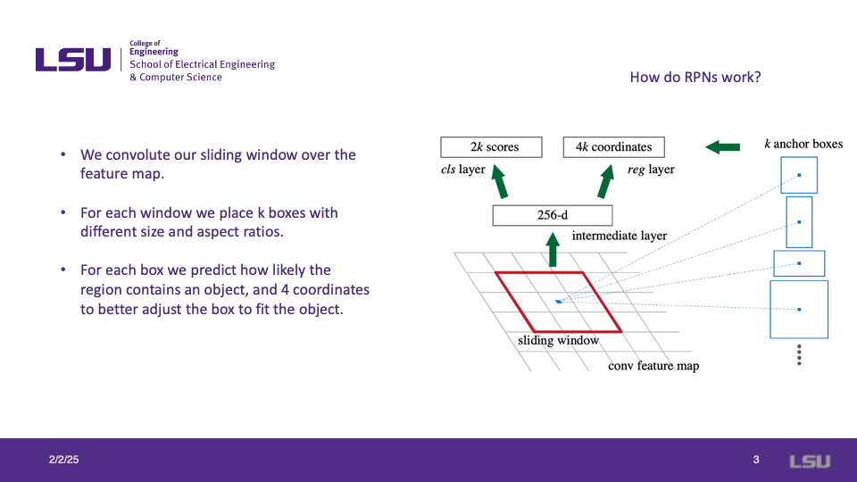
The Region Proposal Network (RPN) operates by convolving a sliding window over the feature map to generate region proposals.
At each window, the RPN places multiple anchor boxes of different sizes and aspect ratios. These anchor boxes help the model detect objects of varying scales efficiently.
The RPN predicts the likelihood of an anchor box containing an object and refines its position by estimating four bounding box coordinates, ensuring a more accurate fit to detected objects.
Slide 6: How are RPN and Fast R-CNN Combined?
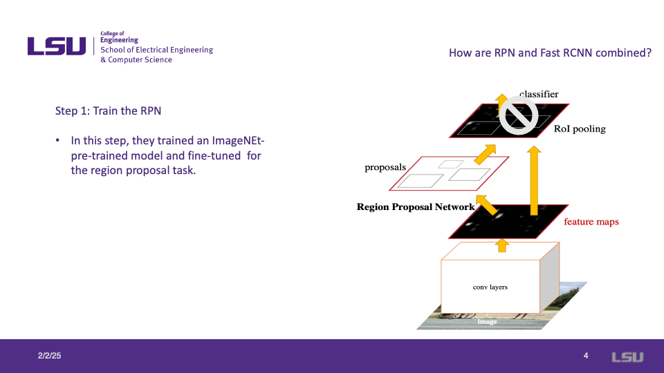
The first step in combining the Region Proposal Network (RPN) with Fast R-CNN is training the RPN.
In this stage, an ImageNet-pretrained model is fine-tuned for the region proposal task. The RPN learns to generate high-quality proposals by predicting object locations based on shared convolutional features.
This step ensures that the proposals generated by the RPN are optimized before integrating them into the full Faster R-CNN pipeline.
Slide 7: Train the Fast R-CNN
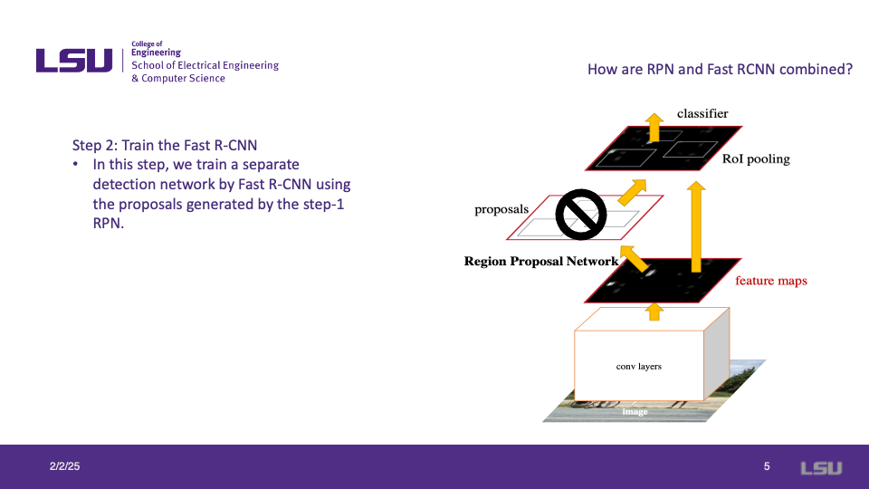
In the second step of integrating RPN with Fast R-CNN, we train a separate detection network using the proposals generated by the RPN.
Fast R-CNN processes the proposed regions and refines the object detection results by classifying the regions and adjusting their bounding boxes. This step significantly enhances object detection accuracy and performance by leveraging the region proposals obtained in step one.
Slide 8: Train a New RPN

In the final step, a new Region Proposal Network (RPN) is trained using the detector network as initialization.
The shared convolutional layers are fixed, and only the layers unique to RPN are fine-tuned. This ensures that the feature extraction process is optimized while keeping the learned object detection capabilities intact.
By sharing feature extraction layers between RPN and Fast R-CNN, the overall framework achieves higher efficiency and improved detection performance.
Slide 9: Fine-Tune the Unique Layers
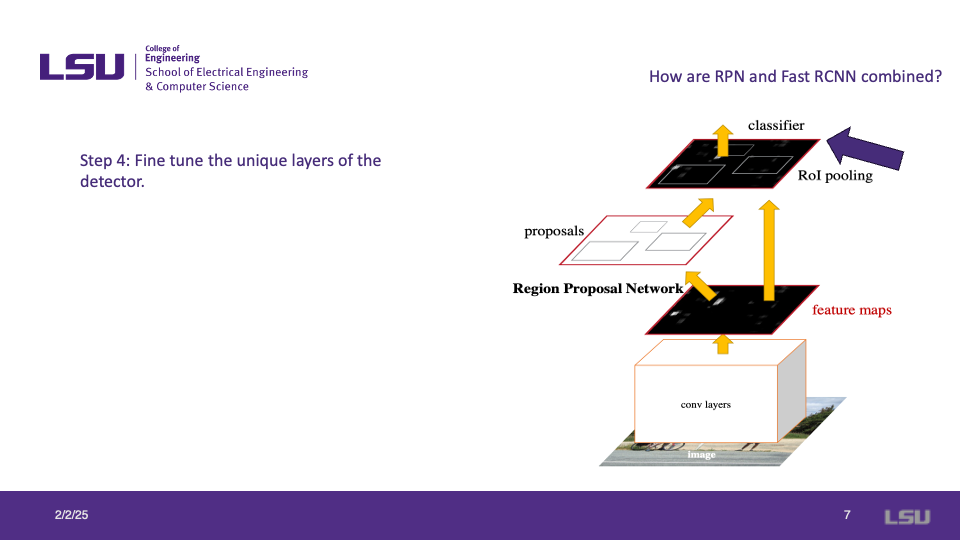
The final step in the Faster R-CNN training process is to fine-tune the unique layers of the detector.
At this stage, the shared convolutional layers remain fixed while the detector-specific layers are adjusted for improved classification and object localization performance.
This fine-tuning step ensures that the network optimally learns object-specific features, leading to enhanced accuracy in object detection tasks.
Slide 10: Implementation Details
Before diving into the experiments, this slide introduces key implementation details.
Slide 11: Non-Maximum Suppression (NMS)
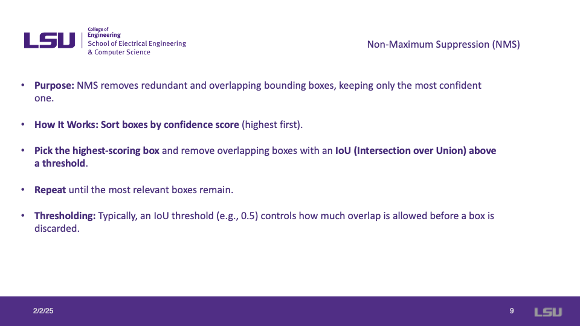
Non-Maximum Suppression (NMS) is a post-processing technique used in object detection to remove redundant bounding boxes and keep only the most confident predictions.
The process involves sorting the bounding boxes by their confidence scores, selecting the highest-scoring box, and removing overlapping boxes based on an Intersection over Union (IoU) threshold. This step is repeated until only the most relevant boxes remain.
Typically, an IoU threshold (e.g., 0.5) is used to control the level of overlap allowed before a box is discarded, ensuring that only the best detections are retained.
Slide 12: Mean Average Precision (mAP)
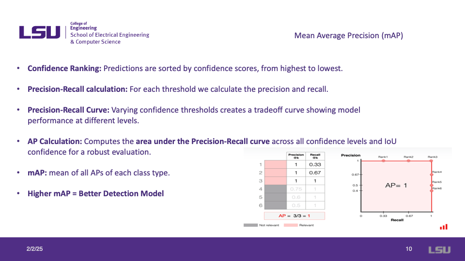
Mean Average Precision (mAP) is a key metric used to evaluate object detection models.
Predictions are ranked based on confidence scores, and precision-recall calculations are performed for various thresholds. The precision-recall curve illustrates the tradeoff between precision and recall at different confidence levels.
The Average Precision (AP) is calculated as the area under the precision-recall curve, and mAP is computed as the mean of AP values across all object classes. A higher mAP score indicates a more accurate object detection model.
Slide 13: Experimentation
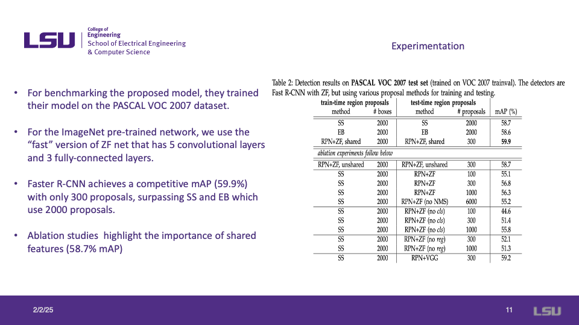
The authors benchmarked their proposed model on the PASCAL VOC 2007 dataset to evaluate performance.
Using the "fast" version of the ZF network, which consists of five convolutional layers and three fully connected layers, the model achieved a competitive mean Average Precision (mAP) of 59.9% with only 300 proposals. This surpassed Selective Search (SS) and EdgeBoxes (EB), both of which used 2000 proposals.
Ablation studies further highlighted the significance of shared features, which contributed to an mAP of 58.7%.
Slide 14: Experimentation with VGG
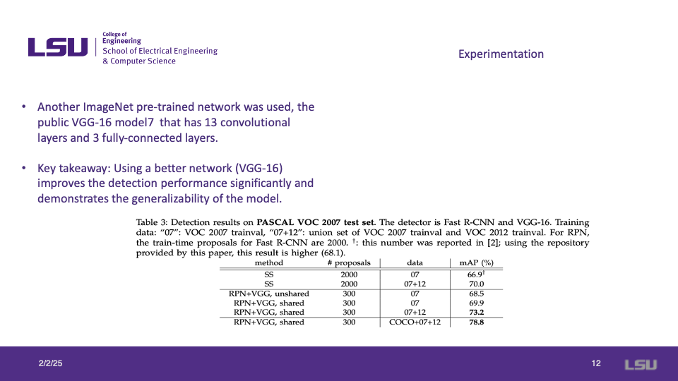
The authors extended their experiments by using the VGG-16 model, which contains 13 convolutional layers and 3 fully connected layers.
Results demonstrated that using a more robust network like VGG-16 significantly improved detection performance. Faster R-CNN with VGG-16 achieved a mean Average Precision (mAP) of 78.8% when trained with COCO+VOC datasets, showing the model's improved generalizability and effectiveness.

The Region Proposal Network (RPN) is highly efficient, requiring only about 10ms on the GPU for processing.
The Faster R-CNN system achieves real-time object detection speeds, with frame rates of 5 fps when using VGG-16 and up to 17 fps when using ZF. These results demonstrate the model's ability to balance accuracy with computational efficiency, making it a practical choice for real-time applications.
Slide 16: MS COCO Evaluation
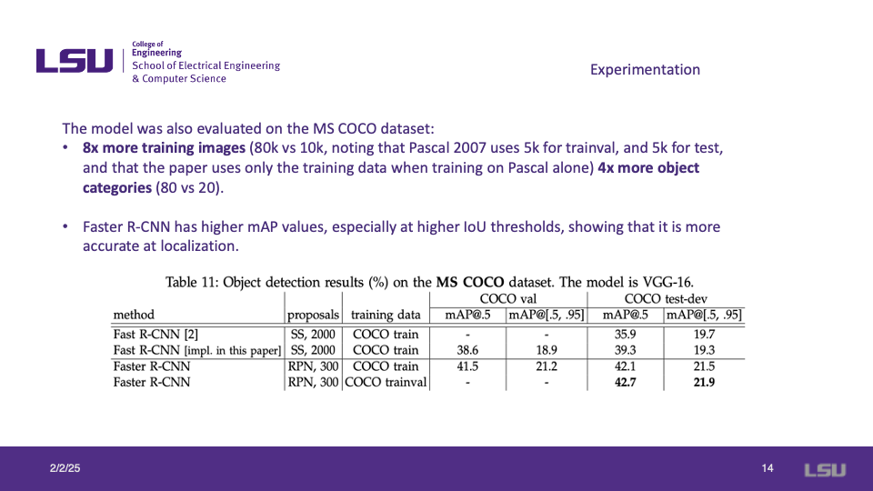
The model was further evaluated on the MS COCO dataset, which contains significantly more training images and object categories compared to PASCAL VOC 2007.
Faster R-CNN demonstrated superior performance in object detection, achieving higher mean Average Precision (mAP) values, particularly at higher Intersection over Union (IoU) thresholds. This indicates the model's improved accuracy in object localization and classification when trained on larger, more diverse datasets.
Slide 17: Recall vs. IoU
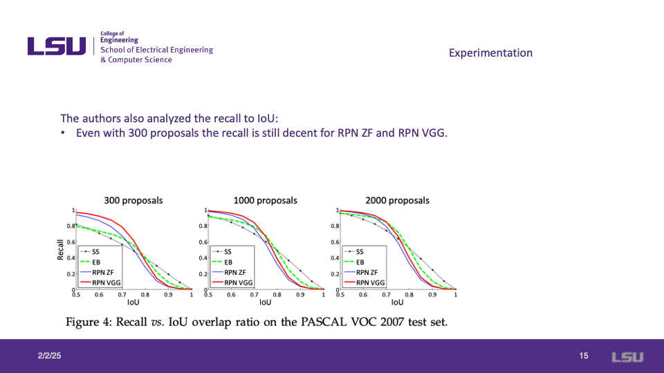
The authors analyzed recall in relation to Intersection over Union (IoU) for different proposal counts.
The results show that even with only 300 proposals, recall remains strong for RPN ZF and RPN VGG models. The comparison across 300, 1000, and 2000 proposals illustrates the trade-off between proposal count and recall performance.
Slide 18: Sensitivity to Hyperparameters
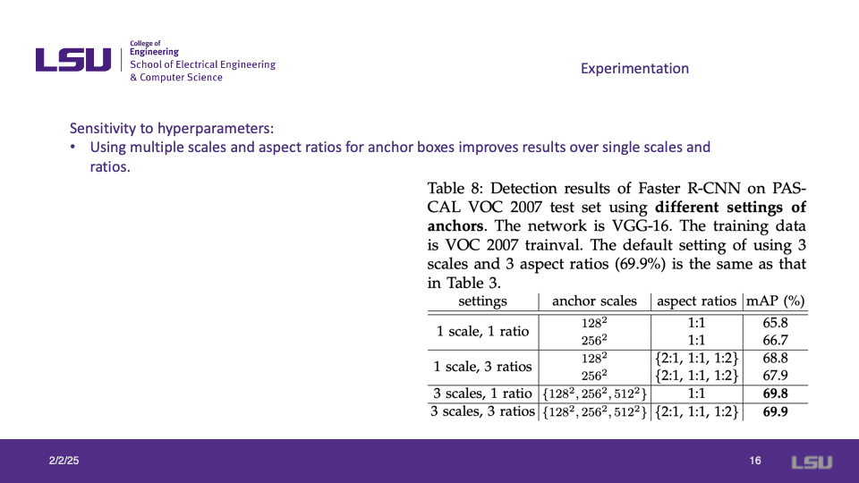
The impact of different anchor box settings on Faster R-CNN performance was analyzed using the PASCAL VOC 2007 dataset.
Results indicate that using multiple scales and aspect ratios for anchor boxes leads to improved detection performance compared to single-scale and single-ratio settings. The best-performing configuration, with three scales and three aspect ratios, achieved a mean Average Precision (mAP) of 69.9%.
Slide 19: Impact of Large Datasets
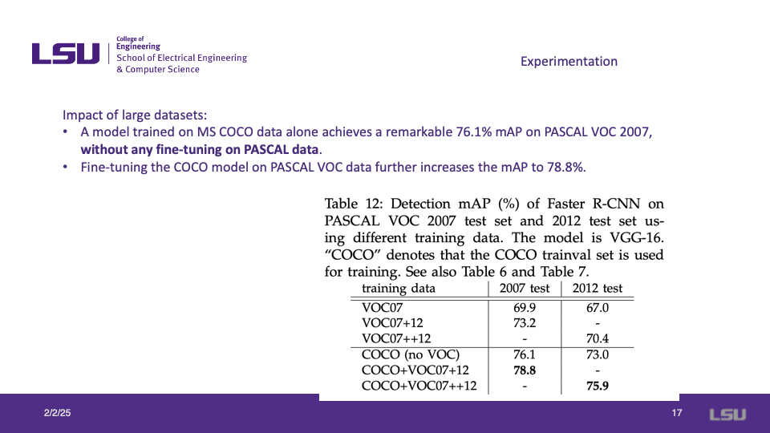
The authors analyzed the effect of large datasets on model performance.
A model trained solely on MS COCO data achieved a remarkable 76.1% mean Average Precision (mAP) on the PASCAL VOC 2007 dataset without any fine-tuning.
Further fine-tuning the COCO-trained model on PASCAL VOC data improved the mAP to 78.8%, demonstrating the benefits of transfer learning and training on larger datasets.
Slide 20: Conclusions
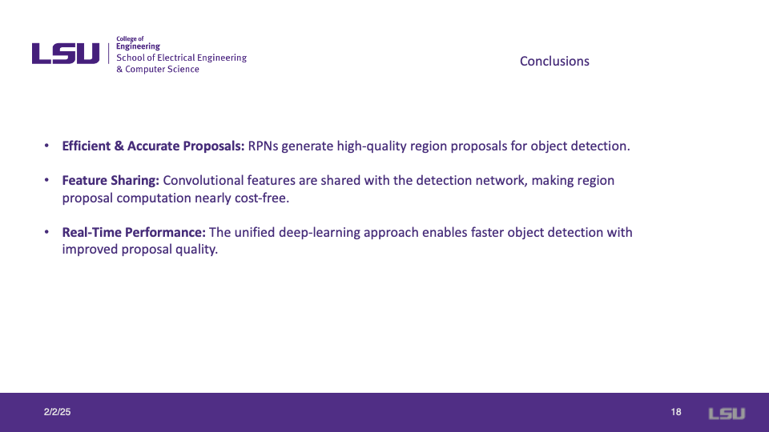
The conclusions summarize the key takeaways of the Faster R-CNN approach:
- Efficient & Accurate Proposals: The Region Proposal Network (RPN) generates high-quality region proposals for object detection.
- Feature Sharing: Convolutional features are shared between the region proposal and detection networks, making the computation of region proposals nearly cost-free.
- Real-Time Performance: The unified deep-learning approach improves object detection speed while maintaining high accuracy.
Slide 21: Advancements After Faster R-CNN
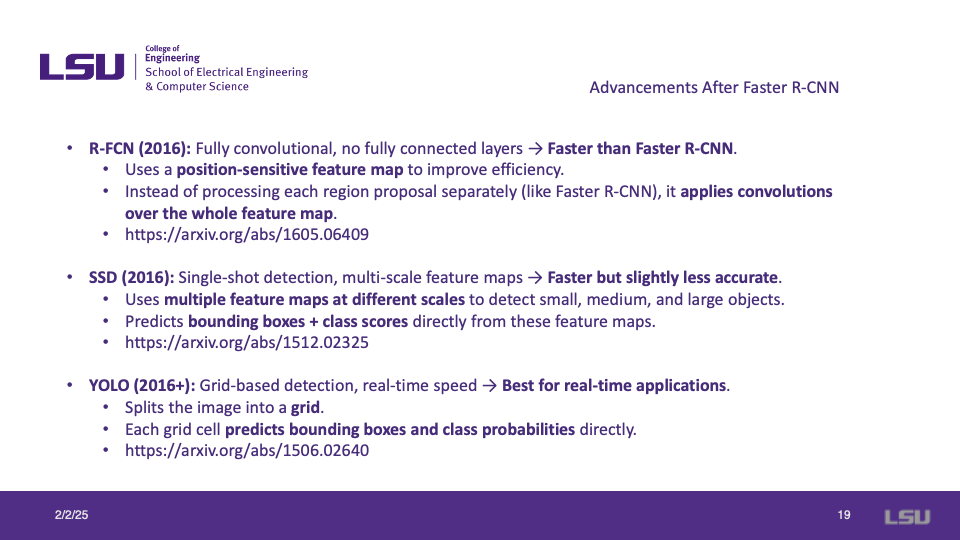
Following the development of Faster R-CNN, several improved object detection architectures emerged:
- R-FCN (2016): A fully convolutional model with no fully connected layers, making it faster than Faster R-CNN. It applies convolutions over the entire feature map instead of processing each region separately.
- SSD (2016): A single-shot detection model that uses multi-scale feature maps, making it faster but slightly less accurate than Faster R-CNN.
- YOLO (2016+): A grid-based detection approach optimized for real-time applications, predicting bounding boxes and class probabilities in a single pass.
Slide 22: Advancements After Faster R-CNN (Continued)

Additional advancements in object detection built upon Faster R-CNN:
- Mask R-CNN (2017): Extends Faster R-CNN by incorporating segmentation, enabling it to detect and segment objects simultaneously using a Region Proposal Network (RPN) and a fully convolutional mask prediction.
- EfficientDet (2020): Uses EfficientNet as the backbone for improved accuracy and efficiency. Introduces BiFPN (Bidirectional Feature Pyramid Network) for enhanced multi-scale feature extraction.
- DETR (2020): A transformer-based model that removes the need for Non-Maximum Suppression (NMS), processing the entire image at once and directly predicting objects.
Slide 23: My Review
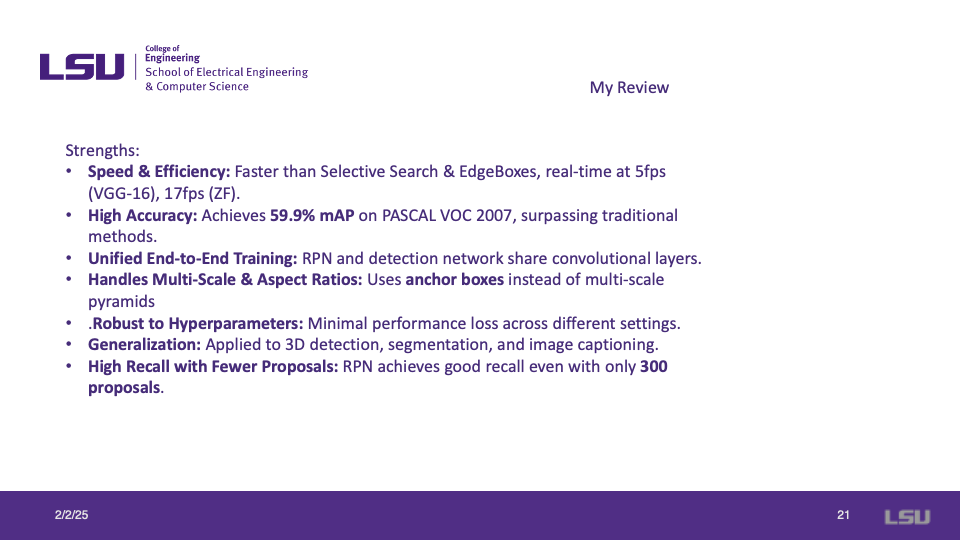
Speed & Efficiency: Faster than Selective Search and EdgeBoxes, achieving real-time performance at 5 fps (VGG-16) and 17 fps (ZF).
High Accuracy: Achieves 59.9% mAP on PASCAL VOC 2007, outperforming traditional methods.
Unified End-to-End Training: Shares convolutional layers between RPN and the detection network.
Handles Multi-Scale & Aspect Ratios: Uses anchor boxes instead of multi-scale pyramids.
Robust to Hyperparameters: Minimal performance loss across different settings.
Generalization: Successfully applied to 3D detection, segmentation, and image captioning.
High Recall with Fewer Proposals: Maintains strong recall even with only 300 proposals.
Slide 24: My Review - Weaknesses
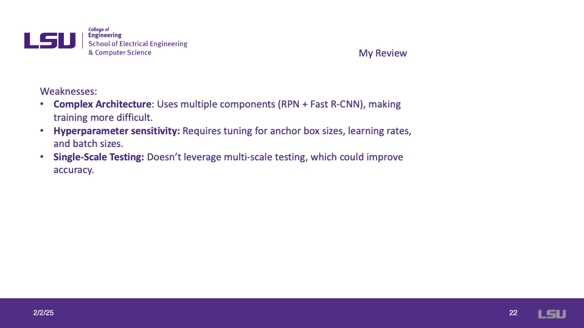
While Faster R-CNN offers strong performance, it also has certain weaknesses:
- Complex Architecture: The model requires multiple components (RPN + Fast R-CNN), making training more challenging.
- Hyperparameter Sensitivity: Performance is highly dependent on tuning anchor box sizes, learning rates, and batch sizes.
- Single-Scale Testing: The model does not leverage multi-scale testing, which could improve accuracy.
Slide 25: Lessons Learned
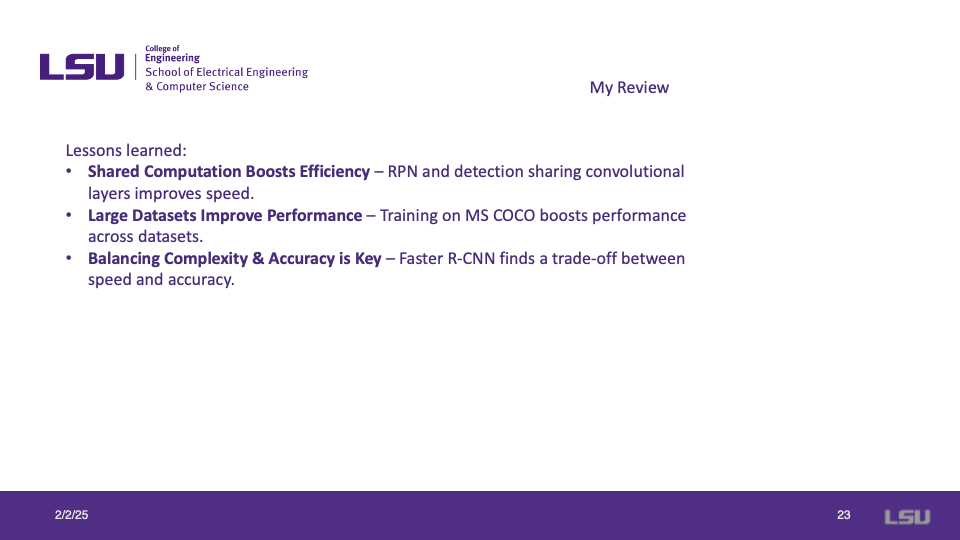
Key lessons learned from the Faster R-CNN study:
- Shared Computation Boosts Efficiency: The sharing of convolutional layers between RPN and the detection network significantly improves speed.
- Large Datasets Improve Performance: Training on MS COCO enhances performance across different datasets, demonstrating the value of large-scale training data.
- Balancing Complexity & Accuracy is Key: Faster R-CNN effectively finds a trade-off between speed and accuracy, making it a powerful yet computationally efficient detection model.
Slide 26: Discussion
The discussion section raises key questions about the trade-offs in object detection models:
If you were designing an object detection system for self-driving cars, would you prioritize Faster R-CNN's accuracy or YOLO’s speed?
Can object detection models be adapted to recognize unexpected obstacles, or will self-driving cars always struggle with new objects?
These questions points out the balance between accuracy and real-time performance in safety-critical applications like autonomous driving.
Discussion
Discussion
Question 1: If you were designing an object detection system for self-driving cars, would you prioritize Faster R-CNN's accuracy or YOLO’s speed?
Aleksandar responded that the choice depends on the availability of data. He explained that Faster R-CNN is preferable when there is less data, as its region-based approach provides better accuracy. However, when dealing with larger datasets, YOLO becomes a better option due to its significantly faster processing speed, which is crucial for real-time applications like self-driving cars.
George acknowledged the complexity of the problem, highlighting that sensor technology could play a role in the decision-making process. He pointed out that different types of sensors (e.g., LiDAR, radar, and cameras) might influence which model performs better under specific conditions.
Question 2: Can object detection models be adapted to recognize unexpected obstacles, or will self-driving cars always struggle with new objects?
Aleksandar suggested that one way to mitigate the challenge of unseen objects is by leveraging an additional model to label data dynamically. In this approach, the model could "pre-label" unknown objects, allowing the primary detection system to incorporate them into its knowledge base over time. While this could improve adaptability, he acknowledged that some level of struggle with truly unseen objects is inevitable.
Audience Questions
Q1: What is the difference between this approach and traditional CNNs?
The presenter explained that Faster R-CNN combines both region proposals and convolutional neural networks, leading to higher accuracy than traditional CNN-based object detectors.
Q2: What does "R" represent in R-CNN?
It stands for Region, referring to the region proposal mechanism in the architecture.
Q3: Why is Faster R-CNN considered faster?
The presenter clarified that it is due to the introduction of the Region Proposal Network (RPN), which eliminates the need for a separate region proposal algorithm, thereby improving computational efficiency.
Q4: Can RPN serve as an additional algorithm?
The presenter responded that RPN is not a standalone algorithm but rather an integral part of the Faster R-CNN framework, designed to encode information for region proposals.
Q5: How is the number of proposals controlled?
The system allows for control by selecting the top k proposals based on confidence scores.
Q6: Ruslan: Is the COCO dataset larger than Pascal?
Yes, COCO contains significantly more images and object categories compared to Pascal VOC.
Q7: Ruslan: What does the Pascal dataset consist of?
Ruslan explained that it includes labeled images with bounding boxes and ground truth annotations.
Q9: George: What applications can this approach be useful for?
Presenter suggested image captioning as a potential application.
Q10: George: Can Faster R-CNN be used in surveillance systems?
The presenter stated that it depends on training data. If the model is trained on surveillance footage, it could perform well in such applications.
Q11: How many proposals are generated for a single image with a single face?
The presenter explained that it depends on the complexity of the network and the number of layers used. Increasing the number of layers generally leads to better performance.
Q12: Ruslan: Are R-CNNs almost cost-free compared to CNNs?
Presenter mentioned that Faster R-CNN shares convolutional features between the RPN and Fast R-CNN components, making it computationally efficient compared to traditional CNNs.
Q13: Obiora: Can DETR be used in construction sites where occlusion is a major issue?
Presenter responded that it is possible but admitted that he had not prepared for this specific scenario and referred to the research paper for further details.
{kind=link}
{kind=link}
{kind=link}
{kind=link}
{kind=link}
{kind=link}
{kind=link}
{kind=link}
{kind=link}
{kind=link}
{kind=link}
{kind=link}
{kind=link}
{kind=link}
{kind=link}
{kind=link}
{kind=link}
{kind=link}
{kind=link}
{kind=link}